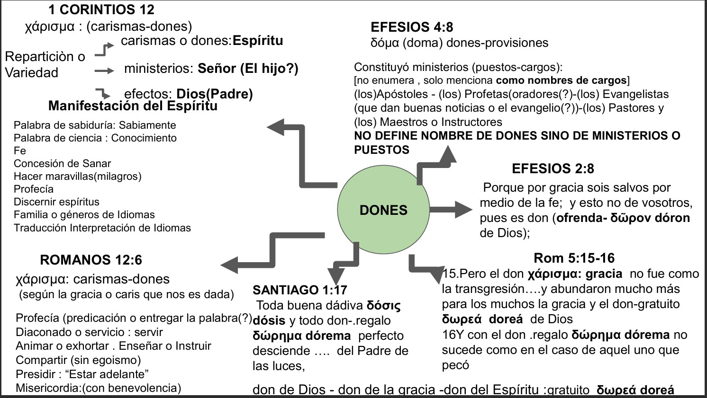

En construcción
Para poder comprender este tema tenemos que volver a construir conceptos sobre una base bíblica
y no sobre enunciados denominacionales o impuestos.
"La verdad está en la Biblia , tenemos que volver a leerla".
Contamos como auxiliares con los textos griegos y algunas observaciones sobre modificaciones en las versiones.
Primera Observación : 1ª Co12: 1 "No quiero, hermanos, que ignoréis acerca de los dones espirituales".
en la RV 1909 y Casiodoro 1569 , dones está en cursiva por que es un agregado contextual , en el texto griego dice"
lo espiritual" y sigue explicando que antiguamente ese término era usado para llevarlos a los ídolos (pero en Cristo no debe ser así).
Ahora bien , en los manuscritos griegos del Nuevo Testamento se usan 5 palabras diferentes para DONES:
En Corintios : χαρισματων karismaton(plural de karisma) con definición de "manifestación del Espíritu ".
En Romanos 12 : χαρισματα karisma(singular) con una definición de tareas de servicio guiadas (por el"Espíritu Santo").
En Efesios 4 : δοματα domata(plural) que significa "dotación" a los que concedió ser ...... ,
Y aun más:
Ef 2: 8 " y esto no es de vosotros pues es don" de Dios δωρον doron que significa ofrenda ( como la que pone en el tesoro del templo).
Rom 5: 15 : Pero el don χαρισματα no fue como la transgresión;....
abundaron mucho más para los muchos la gracia y el don δωρεα(dorea : lo que se da gratuito) de Dios por la gracia de un hombre, Jesucristo.
Sant 1: 17 :todo don δωρημα(dorema:presente) perfecto desciende del Padre de las luces.

Continuará